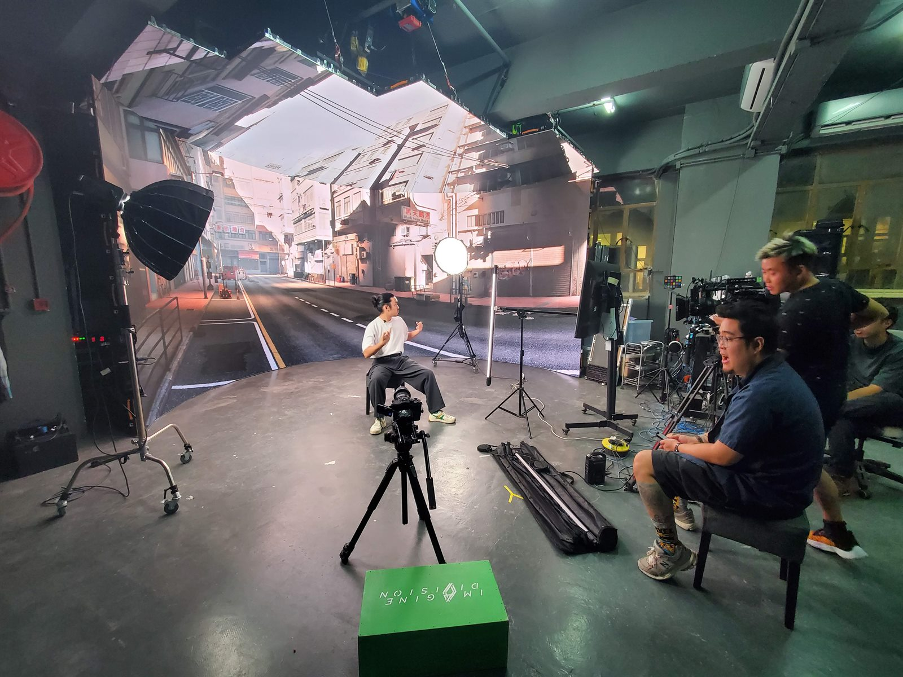

Virtual production
ICVFX, LED walls, nDisplay, camera tracking, lens calibration, OCIO, genlock, timecode and real-time compositing.
Technical Director | Filmmaker | VFX | Event Tech
I build production systems where cameras, LED volumes, Unreal Engine, motion capture, networks and live teams work as one reliable creative pipeline.
My work sits between image-making and infrastructure: the visible frame matters, but so do tracking, sync, latency, color, control rooms and the people operating the show.
ICVFX, LED walls, nDisplay, camera tracking, lens calibration, OCIO, genlock, timecode and real-time compositing.
Motion capture, virtual cameras, NDI media pipelines, live streaming systems and cinematic workflows for VTuber and virtual-event production.
Event visual systems, projection mapping, vMix, Resolume, Dante, lighting, network architecture and custom software for production teams.
Virtual production
I researched panels, designed hardware layouts, handled physical rigging, configured render nodes and networking, then connected Unreal Engine, nDisplay, tracking and lens calibration into a usable stage workflow.
That practical mix of film, event engineering and software is the through-line of the portfolio.
Explore the portfolio
Representative work from the portfolio, grouped around the production problems solved.

Systems for mocap, live streaming, virtual cameras and Unreal-driven performance.

Director of photography, camera crew, gaffer, editor, VFX and motion-graphics roles.

Projection, LED, streaming, audio, lighting and control workflows for live environments.
"The work is never only the image or only the system. The job is to make both reliable enough for people to create with confidence."NoodleDoStuff portfolio direction